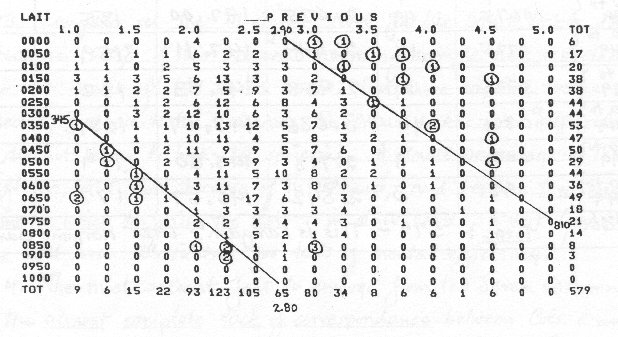

republished with permission from Kevin Langdon
The "LAIT" refers to the Langdon Adult Intelligence Test, written by Kevin Langdon and published in Omni magazine in April, 1979.
The following section is transcribed from the journal of the Four Sigma Society, Sigma Four, No. 6, May 1980.
PAGE 6Supplementary Statistical Data LAIT Norming #2Kevin LangdonThe data presented here is intended to supplement the Statistical Report which is sent with each LAIT score re- port. This information is provided to give some idea of how the test data was converted into I.Q. scores. The Stanford-Binet and California Test of Mental Mat- urity are known to produce too many high scores; therefore scores on these tests were corrected in norming the LAIT. Also, scores on several tests which were very near the tests' ceilings were corrected upwards to compensate for ceiling bumping. The scatter diagram which appears below plots fre- quencies of scores on I.Q. tests taken previously and re- ported on testees' LAIT answer sheets against those of LAIT raw scores. The numbers on the vertical and hori- zontal axes represent the lower boundaries of score cat- egories. Circled numbers in the body of the diagram represent outlying data points (bumps at the extremes of otherwise smooth distributions). The two diagonal lines represent the boundaries chosen between data used and discarded in determining the scaling of LAIT scores to previous I.Q. scores. The numbers penciled in are values of LAIT and pre- vious scores at the endpoints of these lines.
Return to the Uncommonly Difficult I.Q. Tests page.